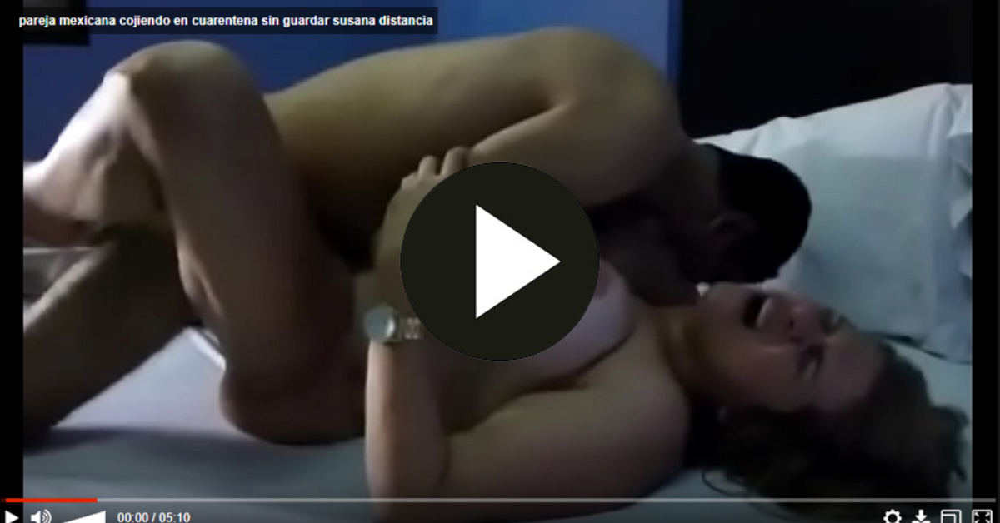
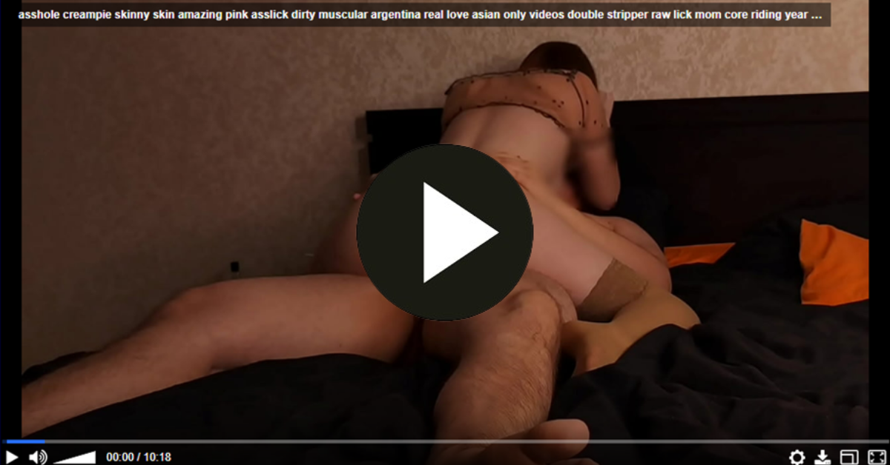

En el fascinante tapiz de la existencia, el deseo emerge como el hilo conductor que teje la compleja trama de nuestras vidas. La travesía por este intrincado laberinto llamado vida se ve invariablemente influenciada por las encrucijadas y los compromisos que surgen en nuestro camino. Cada elección, cada paso, se convierte en un eslabón crucial que contribuye a la construcción única de nuestra historia. Este viaje emocional, impregnado de matices y emociones, se desenvuelve como un relato apasionante en el cual las decisiones que tomamos y los compromisos que asumimos se convierten en los arquitectos de nuestro destino. La pasión, como llama ardiente, ilumina los senderos que transitamos, revelando tanto la fuerza impulsora de nuestros anhelos como las sombras que acechan en las encrucijadas. En este tejido intrincado, el deseo se erige como un faro que guía nuestras acciones, una fuerza poderosa que nos impulsa hacia metas y aspiraciones. Sin embargo, este mismo deseo, con su intensidad y fervor, también puede convertirse en una encrucijada en sí mismo, desafiándonos a equilibrar nuestras ambiciones con las realidades de la vida. Las decisiones que tomamos, a menudo basadas en nuestros deseos más profundos, actúan como piezas fundamentales que dan forma a nuestro destino. Cada encrucijada nos presenta la oportunidad de elegir, de comprometernos con un rumbo particular, y es en esos momentos donde la trama de nuestra existencia se entreteje con los hilos de nuestras decisiones. Los compromisos, a su vez, se convierten en nudos que enlazan nuestra narrativa vital. Son compromisos con otros, con nosotros mismos, con sueños y responsabilidades. La danza constante entre deseo y compromiso es la esencia misma de la experiencia humana, una danza que puede llevarnos a nuevas alturas o sumergirnos en las profundidades de la introspección. Así, en el escenario de la vida, el deseo y los compromisos se entrelazan en una danza eterna, dando forma a la historia única de cada individuo. Este viaje, a veces tumultuoso, a veces sereno, es un testamento de la complejidad y la belleza de la existencia, donde cada elección y compromiso contribuye a la riqueza de nuestra propia narrativa personal.
En el entramado de la existencia, las elecciones son encrucijadas entre el deseo y la responsabilidad. Cada paso tejido con pasión y valentía es un compromiso que esculpe nuestro camino.
En el curso de la vida, el deseo ilumina encrucijadas donde las elecciones se entretejen con compromisos. Cada decisión, cargada de pasión, forja nuestro destino en un relato de valentía.
En la travesía de la existencia, el deseo señala las encrucijadas. Compromisos, hilos invisibles, entrelazan nuestras acciones, tejiendo una historia de pasión y decisiones que dan forma a nuestro viaje.
En el cruce de caminos, el deseo guía elecciones mientras los compromisos tejen un tapiz de responsabilidades. Cada paso, impregnado de pasión, es una nota en la sinfonía única que es nuestra historia.
En la trama de la vida, el deseo dirige las encrucijadas, donde compromisos y elecciones entrelazan nuestra narrativa. Cada instante, impregnado de pasión, es un capítulo que define nuestro viaje.